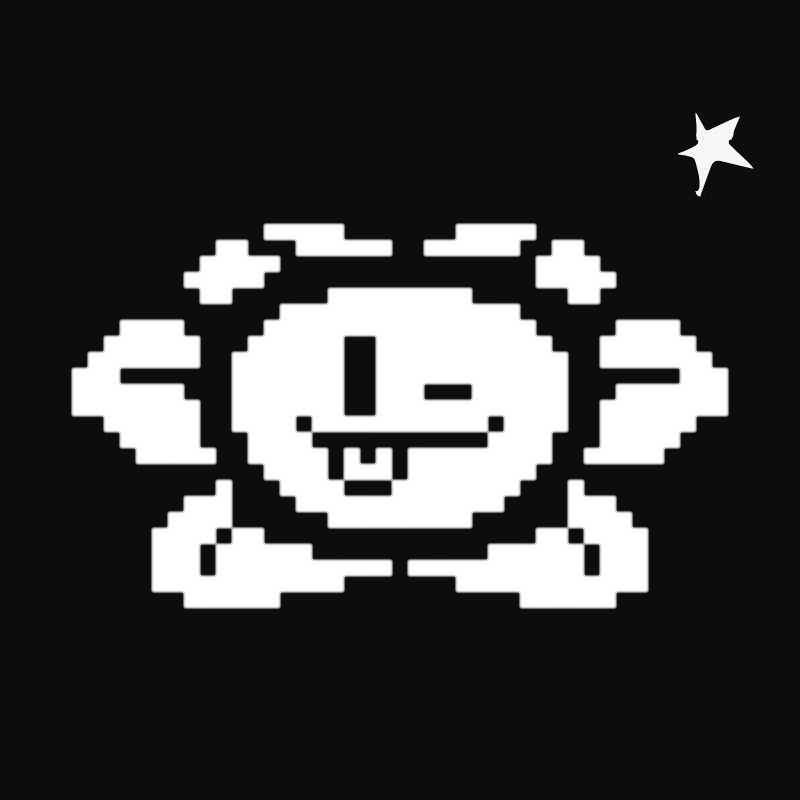

Undertale, lançado em 2015, é um cativante RPG onde escolhas não só importam, como também fazem toda a diferença tanto para o final do jogo quanto durante toda a experiência do jogador.
Em um mundo dividido entre duas raças, humanos e monstros, há muito tempo eclodiu uma guerra, da qual os humanos saíram vitoriosos. Então, sete magos humanos baniram todos os monstros para o subterrâneo, e os selaram lá embaixo com magia, para que nunca fossem capazes de retornar à superfície.
Em comparação com os monstros, os humanos eram poderosos demais, e os subjugaram sem dificuldades. Porém, Asgore Dreemur, o rei dos monstros, sabia que havia uma possibilidade para libertar o seu povo: utilizando a força equivalente a sete almas humanas, ele poderia quebrar o selo construído pelos sete magos.
Para isso, seria necessário sacrificar os humanos.
É diante desse cenário que você, uma criança humana, acorda no underground depois de uma terrível queda – que foi amortecida por uma cama de flores amarelas. Perdido em um lugar onde todos te temem por você ser mais forte, e muitos te caçam por acreditar que seu sacrifício poderia libertá-los de sua prisão, a você é dada uma escolha: vai matar ou morrer? Hahahahahaha! Ops, espera… Não é bem por aí! Ao jogar, você descobre que existem outras opções.
E esse é um dos grandes diferenciais de Undertale: se trata de um RPG onde não é necessário matar absolutamente nenhum inimigo para prosseguir e zerar o jogo. Tudo parte das próprias escolhas do jogador, onde é possível conversar com inimigos, abraçá-los, escutá-los, fazer amizade e até marcar encontros com eles – ou ir pelo caminho da violência ao se defender de seus ataques.
Durante as batalhas de RPG de turno, cada oponente mostra sua personalidade em seus ataques – por isso você às vezes terá que fugir de mísseis teleguiados por um dummy louco, às vezes terá que desviar de notas musicais saídas da boca de uma sereia cantora, e haverá até um momento em que você será inexoravelmente atacado pelas lágrimas de um fantasma deprimido. Todas as batalhas podem ser vencidas ou pela violência, ou fazendo as ações certas nos momentos certos, porque cada oponente é um personagem que carrega uma história e com ela, traz suas necessidades, que, se atendidas, podem apaziguá-lo.
E no fim das contas, é você que escreve a história que será contada no jogo, a partir de cada uma de suas ações. Explore o subterrâneo e conheça personagens cativantes, viva histórias emocionantes e visite lugares aconchegantes como o quarto de hóspedes da casa da Toriel.
E aí, você vai sair do subterrâneo por bem, por mal, ou por um dos muitos caminhos do meio?
"É uma experiência criada com maestria que eu não vou esquecer tão cedo."
- IGN